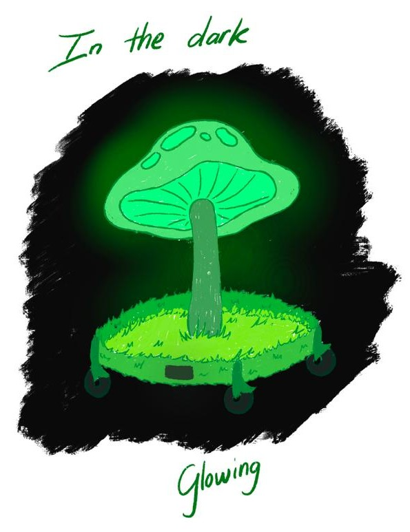
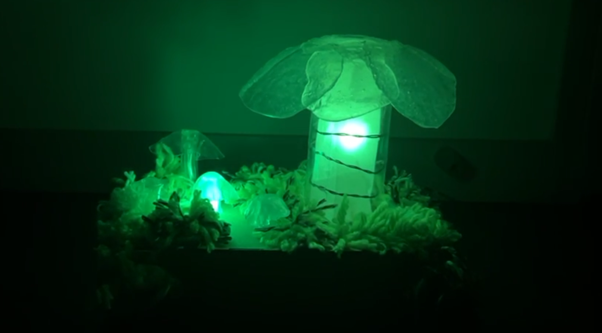
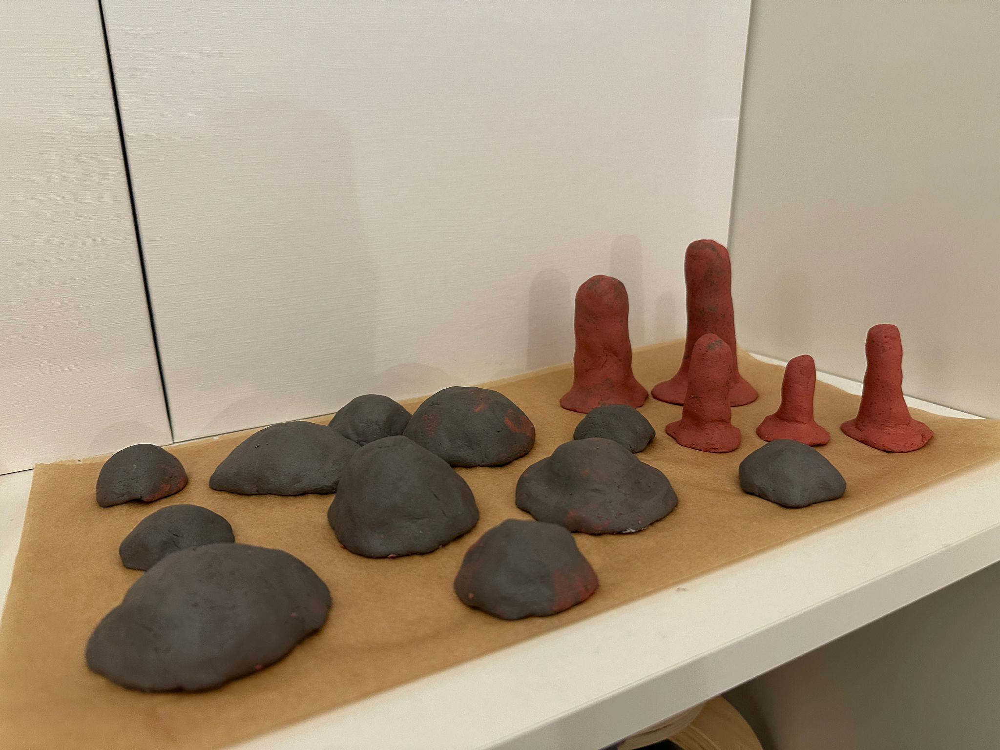
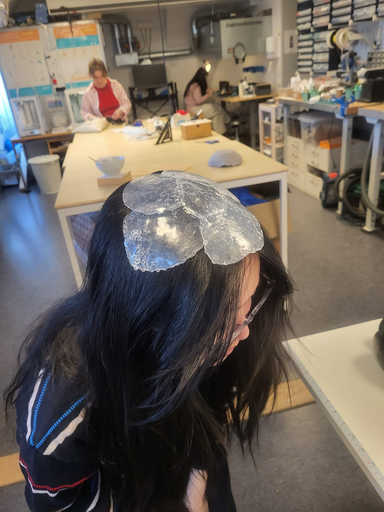
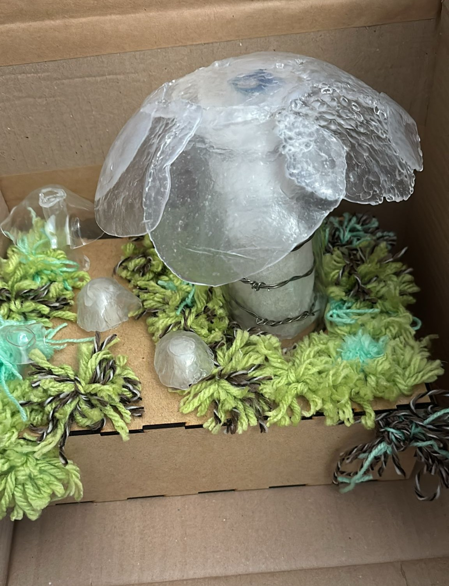

Mama & Baby Mushrooms
Speculative smart home lighting system inspired by bioluminescence and fungal mycelial networks
Collaborated with Jiashu Sun, Lucky Hyosun Kim, Stella HuynhVideo Prototype | Design Process Document
What will smart home technology look like if it is based on ecological systems rather than control based smart home network? Based on the idea of solarpunk, we question if our homes can functioned more like living ecosystems and a co-living environment between human and non-human entities.
Design Concept
We want to reimagin a home lighting system that allow household environment to bond with ecological
systems in a human decentered way. The design draws inspiration from bioluminescence (the ability to
illuminate
some organism
have) and mycelial networks (fungal's webs that connect and communicate across with each other).

Therefore, we designed a speculative system that uses a type of hypothetical color-changing
bioluminescence
mushroom to creating a
lighting system. In the system, there will be a "mama mushroom" that controls how the network of "baby
mushrooms" lit
up, like how real fungi communicate through mycelial connections.
This design also challenges the typical smart home aesthetics of sleek minimalism, and instead embracing the
organic, earthy, and chaotic characteristics of how merging our living surroundings with our daily lives.
Interaction Design
A video prototype illustrated how the full speculative
system would function in a home context. The mushrooms will be "planted" alongside the walls around the
house. The user will interact with the "mama
mushroom" that is placed in different rooms. It will send signals to the path the "baby mushrooms" light
up and it becomes a light trail that leads to different rooms, allowing user to navigate in the dark.

The mama mushroom's cap rotates to manipulate the color and pathway should illuminate. The light trail
of the
baby mushrooms will light up when the user pads the mama
mushroom.
Physical Prototype
We built a working prototype to illustrate the physical and tactile interactions of the design. This prototype have a rotation mechanisms to achieve the rotation of the mama mushroom's cap. We also used Arduino, touch sensors, and color-changing LEDs to create the interaction of padding mama mushroom and then the baby mushroom change color.




